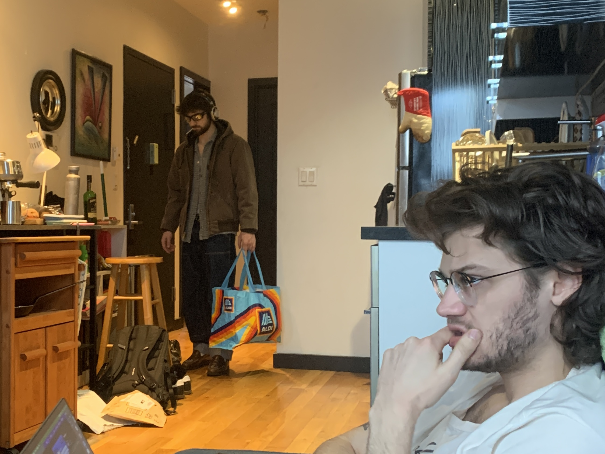

Conan will always be envious of the food you are eating, even if it's something really basic. You could be eating the worst looking peanut butter and jelly sandwich ever and he would whine that it looks so good.

One night Cass and I were watching TV and Conan came home and saw the piece of toast that Cass was eating and said "Cookie??? Can I have a bite?"